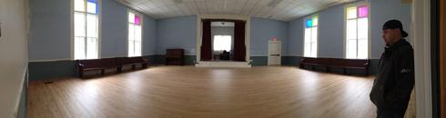
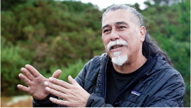
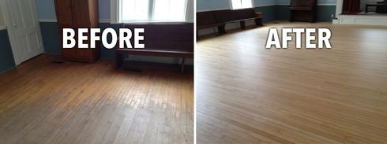

News, Thanks, and Upcoming Events
Posted Fri, Jan 12, 2018; updated Fri, Jan 12, 2018
Jared from Hilltown Hardwood Floors surveys the newly refinished floor. 
First, we wanted to share with you a super-encouraging end-of-year report to the MCH Board from our treasured treasurer Chris Wise:
Hi All - I just crunched the numbers for 2017, and I’d like to congratulate the board on a very successful year! While we had an unexpected windfall in the form of a large donation, even without that, our income from rentals and donations exceeded our expenses for the third year in a row, and we were able to build a solid financial cushion. As we all know, there are lots of ways the hall could require a large emergency expenditure at any time (roof springing a big leak, furnace crapping out, etc.), so this was a MAJOR accomplishment in my eyes.
The most important accomplishment, however, is the sheer number of events that we hosted in the last year. I tried to count them all using the rent income entries, but gave up because it was going to take too long. I’ll just say that we’ve provided a venue for concerts, open mic nights, weddings, parties, dances, yoga classes, lectures, film screenings, political gatherings, and rehearsals for dance groups and acting troupes, among other things. It’s really quite impressive, and my congratulations go out to all who have worked so hard to facilitate all this wonderful community engagement. In this era when so many folks feel disconnected from their neighbors, and the divisions in our society seem gaping, we’re offering a place where folks of all stripes can come together. It may seem like a small thing, but it’s really important.
Here’s to 2018!
Chris
Open Mic Night #20
For featured artists, we're bringing back The Taylor Hill Duo (Norman Bolter on trombone and cellist Mark Fraser). Works from the baroque to the post-contemporary.
They amazed us during Open Mic #16 with their musicianship and humor. Can't wait to see what they have in store for us this Saturday!
After the Taylor Hill Duo at 7, we'll have open mic, with 15 minute time slots. Sign up before 7 to guarantee a spot. All types of performance welcome. BYOB.
Come share your art. We will clap - a lot.
P.S. You will be the first to see our newly-refinished floors! They are still curing, so…
Please remove your shoes in the hallway to help protect the new finish. Thanks!
A community birthday party for Elaine Cuthbert, long-time Grange #141 Member, and Montague resident. Music by David Kaynor and friends, light fare and cake, of course! Come celebrate this beloved nonagenarian, and see some of the improvements to the Montague Common Hall she has helped make possible!
Two Events with visiting Hawaiian elder, Kalani Souza

Wisdom Teachings of the Moon, Indigenous Practices from Hawaii (Sliding scale $30-$75. Pre-registration required- please contact Becca Martenson)
7-9 p.m. Discussion
Neighborhood Response to Climate Change and Other Unpredictable Challenges of Our Times: An Indigenous Perspective ($10 admission)
For more info on either of these events, or to register for the workshop contact Becca Martenson rebeccaamartenson@gmail.com
Many thanks to ALL of our awesome donors in 2017!
We would especially like to thank our
Thank you, Thank you! Without you, there would be no Montague Common Hall!
We would also like to thank Jared Mizula and his crew at Hilltown Hardwood Floors for making our dance floors new again, and GORGEOUS! Here's the before and after:

And here's their website in case you have floors of your own you would like to refinish: http://hilltownhardwoodflooring.com